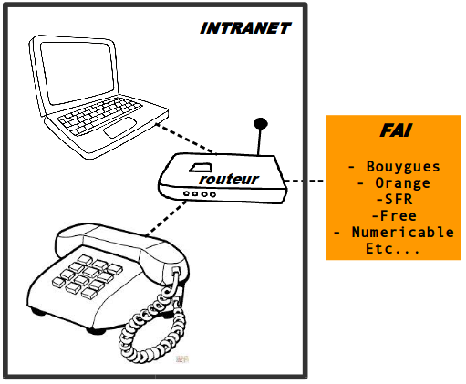
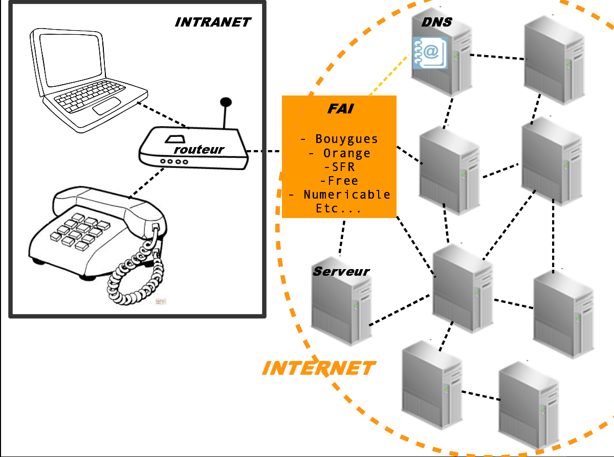
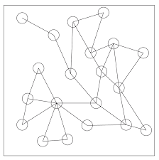

Comment marche Internet?
⇩
Comment marche Internet?
- Intranet
- Un réseau décentralisé
- Le procole de communication HTTP
- Parcours d'une requête
De quoi a -t-on besoin pour aller sur Internet?
⇩
⌂ Intranet - A la maison ⌂
☞ Pour Internet, on a besoin de:
- Un ordinateur
- Un abonnement Internet :
auprès d'un FAI (Fournisseur d'Accès Internet)
par téléphone analogique,fibre optique ou GSM
- Un routeur: la fameuse "box" Internet appelée aussi modem

☁ Internet = InterconnectedNetwork ☁
Soit un réseau de serveurs décentralisés connectés entre eux par des câbles qui utilise un même protocole de communication

☞Des serveurs partout dans le monde
☞reliés par des câbles sous marins
☞ils discutent entre eux en utilisant le même protocole
☁ Internet: un réseau décentralisé ☁
- DARPA >> ARPANET >> INTERNET
- Pas de point central
- Circulation de données entre les membres du réseau

De mon navigateur à la page web
Internet = InterconnectedNetwork
☞ Des machines (serveurs) connectés entre eux par des câbles
Comment marche un site web?
⇩
- Client et serveur
- Le site web
- HTML Hyperlien et hypertexte
Du HTML à la base de données
⇩
- Le web scrapping
- La collecte et structuration des données
Les "versions" du web
⇩
Et 1, et 2 et 3.0!